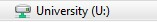
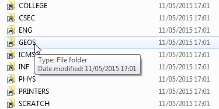
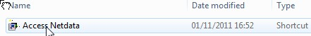
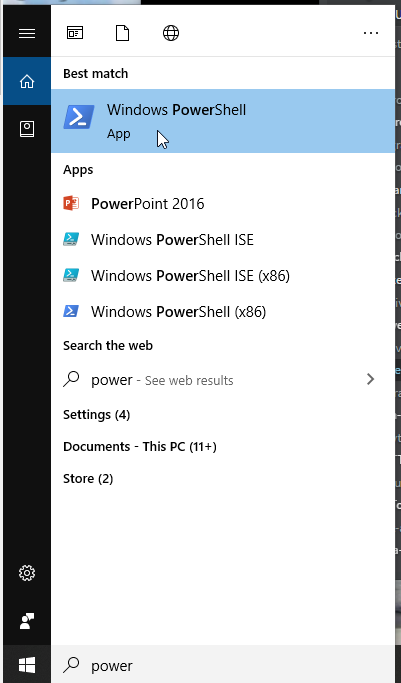
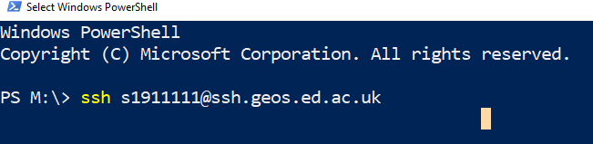
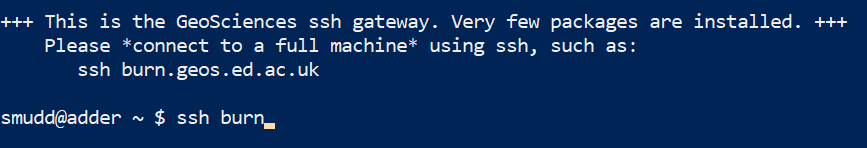

1. Introduction
Welcome to the installation instructions for LSDTopoTools, which is a collection of programs for analysing topography and modelling hydrology, landscape evolution and soil development.
1.1. The three main ways to use LSDTopoTools
There are three main ways you can use LSDTopoTools
| Installation method | Advantages | Disadvantages |
|---|---|---|
Install locally on your computer using the package management software conda. This works in a Linux environment so if you are in Windows or MacOS you will need to access the Linux subsystems (which is not that difficult these days). |
Get full performance of your memory and CPU. |
You need to be familiar with conda. You need to maintain the various packages yourself. |
Run within the lsdtt docker container. To do this you need to install docker first, but as of 2021 this is quite easy, even on Windows. |
After you install docker, this just starts right out of the box. Easier than installing locally. Python stack certain to work. |
You won’t get full power of your CPU or memory (because Docker runs in parallel with your host computer). |
If you don’t want to install any software (or don’t have privileges to do so) you can run LSDTopoTools in a web browser using google colab. |
You don’t need to install anything on your computer. All you need is a web browser. |
Takes ~4.5 minutes to spin up each time you start, every time you start. Unless you pay google, your storage will be limited (but the memory on google colab is quite good: 12Gb for the free version) |
1.2. Components of LSDTopoTools
LSDTopoTools has several components. These can be used in isolation or together.
-
LSDTopoTools command line tools: these run the core computational components of LSDTopoTools. These do most of the heavy lifting of LSDTopoTools.
-
lsdviztools a series of python scripts for visualising LSDTopoTools outputs. You can run these interactively but they also come with command line scripts.
-
lsdtopytools a python wrapper for LSDTopoTools so you get much of the functionality of the LSDTopoTools command line tools within the python environment.
1.3. Basic local installation
If you are already familiar with Linux and/or Conda this should relatively painless.
-
If you are in a Linux or MacOS all you really need is Miniconda. You should use the python 3.8 version.
-
In windows don’t install conda for windows! Create an Ubuntu subsystem using these instructions and install conda there.
-
Once you have conda you can install the command line tools like this:
$ conda -c conda-forge install lsdtopotools -
Now you can use the command line tools!
1.4. lsdtopotools Python tools
-
You install lsdtopytools using conda
$ conda -c conda-forge install lsdtopytools -
You install lsdviztools using
pip:$ pip install lsdviztools -
These both have a bunch of dependencies so it is easier to use our docker container that has everything pre-installed. You can read about that below.
1.5. Menu of more detailed instructions
-
Installation using Docker. This works for MacOS and Linux well. It works for Windows 10 Enterprise edition. If you don’t have those operating systems you will need to use VirtualBox + Vagrant (see below).
-
Native installation on a Linux system. If your native operating system is Linux you can just install LSDTopoTools after getting all the libraries you need. The documents are made under the assumption that you use Ubuntu, but if you are a Linux user we are confident you’ll be able to port the instructions to your native system (usually this involves replacing
sudo apt-getwithsudo yum). -
University of Edinburgh installation. This software is developed at the University of Edinburgh and is used in teaching. We include instructions specific to students and staff at the University of Edinburgh for use on the School of GeoSciences servers.
2. Installing LSDTopoTools using Docker
You can read about Docker here: https://en.wikipedia.org/wiki/Docker_(software) Basically it is a system for running containers, which are little pre-built computing environments. There are alternatives (podman, singularity) but Docker is the most popular and widely available.
In practice, the LSDTopoTools developers have installed everything on a container so you don’t have to do any of that work. You just start the container and then start analysing topography.
2.1. Install docker
To install docker, follow these instructions: https://docs.docker.com/engine/install/
For Windows, you first need to activate Windows Linux Subsystem 2. This is easy but you will need administrative permissions. The instructions are here: https://docs.microsoft.com/en-us/windows/wsl/install-win10. But basically all you need is a powershell with admin permissions and you run wsl --install. Easy peasy.
2.2. Once you have docker
-
Before you do anything you need to create an
LSDTopoToolsdirectory on your host operating system that you will share with the LSDTopoTools docker containers.-
We will assume this is in
C:\LSDTopoToolson Windows -
Or
\LSDTopoToolson MacOS and Linux.
-
-
Pull the full LSDTopoTools container and run it with a linked volume:
-
For windows:
$ docker run --rm -it -v C:/LSDTopoTools:/LSDTopoTools lsdtopotools/lsdtt_pytools_docker -
For MacOS or Linux:
$ docker run --rm -it -v /LSDTopoTools:/LSDTopoTools lsdtopotools/lsdtt_pytools_docker -
Or if you have a different directory to LSDTopoTools data on your host machine:
$ docker run --rm -it -v /PATH/TO/YOUR/DATA:/LSDTopoTools lsdtopotools/lsdtt_pytools_docker
-
-
The first time you do this it will need to download and unpack the container. It is ~4Gb so that will take a while. Have a good book ready.
-
When the container starts up you are ready to run LSDTopoTools
-
If you want our example data you can run:
# Get_LSDTT_example_data.shYou only need to do this once.
-
When you are finished with your docker session type
ctrl+d.
2.3. If you are a developer
If you are not planning on writing LSDTopoTools code, ignore this bit.
-
Run the following command:
$ docker run --rm -it -v C:/LSDTopoTools:/LSDTopoTools lsdtopotools/lsdtt_pcl_docker -
This will grab a container that is used to compile LSDTopoTools
-
You then need to clone the LSDTopoTools2 directory and compile it by going into the
/srcdirectory and runningsh build.sh. -
The programs then end up in the
/LSDTopoTools/bindirectory so you will need to add that to your path.
/// include::sections/docker_notes.asc[]
3. Installing natively on a Linux system
-
You first need miniconda. Get the python 3.8 version.
-
Create and environment:
$ conda create --name lsdtt -
Now install the required packages.
-
If you only want the lsdtopotools command line tools use:
$ conda install -y -c conda-forge conda $ conda install -y lsdtopotools -
If you want the full LSDTopoTools computational stack install:
$ apt-get update && apt-get install -y \ build-essential \ libfftw3-dev \ && rm -rf /var/lib/apt/lists/* $ conda install -y -c conda-forge conda $ conda config --add channels conda-forge $ conda config --set channel_priority strict $ conda install -y wget unzip $ conda install -y ffmpeg $ conda install -y lsdtopotools $ conda install -y git python=3.8 $ conda install -y ipython ipykernel jupyter $ conda install -y conda-build $ conda install -y mamba $ mamba install -y gdal rasterio geopandas matplotlib numpy scipy pytables numba feather-format pandas pip pybind11 xtensor $ pip install lsdviztools lsdttparamselector $ mamba install -y lsdtopytools
-
3.1. Building the code from source
ONLY DO THIS IF YOU ARE A DEVELOPER!! If you just want to use the code follow the basic instructions.
The below instructions are for developers who work with the source code. Unless your name is Simon, Fiona, Stuart, Boris, David, Marina, or Martin and are now or formerly associated with the University of Edinburgh’s Land Surface Dynamics group it is highly unlikely you will need any of this.
3.1.1. Get the associated software you need
-
Start a terminal session.
-
Install some essential softare (we will use Ubuntu installation, you need to modify these if you are on another version of Linux). This assumes you have the GNU c++ tools:
$ sudo apt-get install -y git $ sudo apt-get install -y gdal-bin $ sudo apt-get install -y python-gdal $ sudo apt-get install -y libfftw3-dev $ sudo apt-get install -y cmake
3.2. Option 1: Use the script
We made a script for Linux users. It does the following:
-
Makes an LSDTopoTools directory
-
Clones and compiles the code
-
Downloads the example data
-
Spawns a bash shell that knows where the command line tools are.
To use it:
-
Grab the script
$ wget https://raw.githubusercontent.com/LSDtopotools/LSDTT_Edinburgh_scripts/master/LSDTT_native_linux_setup.sh -
Run the script
$ sh LSDTT_native_linux_setup.sh -
You will need to tell this script where you want to install LSDTopoTools.
-
The first time you run this it will take a while to compile and get all the files. But you can run it thereafter for any terminal session and it will add the actually LSDTopoTools programs to your
$PATHfor that session. -
If you don’t want to bother with the script each time, we suggest adding the location of the LSDTopoTools prgrams to your
$PATHin your.bashrcfile. If you don’t know what that previous sentence means, just use the script.
3.3. Option 2: Do it by hand
3.3.1. Get the LSDTopoTools2 code and install
-
You probably should make a directory where you keep everything associated with LSDTopoTools. A suggested name for this directory is LSDTopoTools: it says what it does on the tin. Go into that directory once you have created it.
-
Next, clone the LSDTopoTools2 repository here:
$ git clone https://github.com/LSDtopotools/LSDTopoTools2.git -
Go into that new directory:
$ cd LSDTopoTools2 -
Run the setup tool
$ sh lsdtt2_setup.sh -
You can now navigate to your data and start using LSDTopoTools. See our section on first analyses in LSDTopoTools.
3.3.2. Starting an LSDTopoTools2 session after your first installation
-
Whenever you return to run an LSDTopoTools2 session, you will need to tell the computer where your program files are. You cave two options:
-
Run
sh lsdtt2_setup.shin the LSDTopoTools2 directory. This gets the latest version of the software, recompiles, and points your session to the program files. -
Run
sh lsdtt2_terminal.shin the LSDTopoTools2 directory. This just points your session to the program files.
-
-
You must do one of those two things otherwise your computer will not know where the program files are.
-
As an alternative, you can go into yor
.bashrcfile and add the/path/to/LSDTopoTools2/bindirectory to your$PATH. You will need to change the full path to reflect your own directory system. If you don’t know what a.bashrcfile is you are probably better off running thelsdtt2_terminal.shscript.
3.3.3. Getting the example data
-
Create a data directory. The documentation assumes this directory structure:
| Your home directory (native linx) or the root directory (docker)
--|LSDTopoTools
----| LSDTopoTools2
------| subdirectories with source code and programs
----| data
------| subdirectories with different projects
----| Other LSDTopoTools directories (e.g., LSDMappingTools, LSDTT_documentation) -
Go into the data directory and grab the example data from github, then unzip and clean the zip file:
$ cd data $ wget https://github.com/LSDtopotools/ExampleTopoDatasets/archive/master.zip $ unzip master.zip $ mv ./ExampleTopoDatasets-master ./ExampleTopoDatasets $ rm master.zip -
You should now have the example data for further examples.
3.4. Installing LSDTopoTools using Windows Subsystem for Linux
Some users have had difficulties getting Docker to install on Windows as it can require changing a setting in the BIOS. If this is the case, you can try to install the code natively using Windows Subsystem for Linux. This is a piece of software from Microsoft that allows you to run a small Linux environment (in our case Ubuntu) from your Windows operating system. We will download this software from the Microsoft Store, which should be preinstalled on any Windows 10 system.
-
Firstly, download the Ubuntu app from Microsoft Store. If you can’t find it, then you can also get it from this link. You might need to restart your computer as prompted following this step.
| The download here is around ~200 Mb, so make sure you have enough space on your system for this. You don’t need to register to the store in order to download the app. |
-
Launch the Ubuntu app by clicking on it from the Start menu. You will then be prompted to create a new user account and password - you can choose whatever you want for this, but make sure you remember it! The password is important for installing packages in the next steps.
-
The first time you launch, make sure you update and upgrade your standard packages by typing:
$ sudo apt update && sudo apt upgrade -
Now install the dependencies for LSDTopoTools:
$ sudo apt install -y build-essential git gdal-bin python-gdal libfftw3-dev cmake -
Then make a new directory for the LSDTopoTools code and download it from GitHub:
$ mkdir LSDTopoTools && cd LSDTopoTools $ git clone https://github.com/LSDtopotools/LSDTopoTools2.git -
This will create a directory called
~/LSDTopoTools/LSDTopoTools2in your home. Navigate to this directory and run the start up script:$ cd LSDTopoTools2 $ bash lsdtt2_setup.sh -
This script will set up the code: we then need one more command to add the binary to your local path. First run:
$ cd bin $ pwd -
This will print out a directory path. Copy this directory path, let’s call it
/path/to/your/binfor the sake of this example, and run:$ export PATH=/path/to/your/bin:$PATH -
This will link the
binfolder to the system path and make the code executable from anywhere in the Linux subsystem.
3.4.1. Accessing data from Windows
Once installed in the linux subsystem, Microsoft strongly warns against accessing to Ubuntu file system from windows as it can damaged it quite easily. However the opposite is fairly easy: the easiest way to do that is to store data in your C drive, accessible from the linux subsystem with:
$ cd /mnt/c/4. Installing LSDTopoTools at the University of Edinburgh.
These instructions are for students and staff within the School of GeoSciences at the University of Edinburgh.
Our servers have the LSDTopoTools command line tools installed. So all you need to do is get on one of our servers.
4.1. Mapping your network drive
You will need access to your data on the network drive to use LSDTopoTools. You only need to do this one in any computer lab (and possibly only once ever):
-
Open a file explorer window and under computer select the "University drive":
Figure 1. The university drive -
Then go into the Science and Engineering folder ("SCE"):
 Figure 2. The science and engineering folder
Figure 2. The science and engineering folder -
Then into the GeoSciences folder ("GEOS"):
Figure 3. The geosciences folder -
Then into the Drive Mapping folder ("drive_mapping"):
 Figure 4. The drive mapping folder
Figure 4. The drive mapping folder -
And finally double click the shortcut "Access Netdata":
Figure 5. The access netdata shortcut
4.2. Getting on to our servers with with ssh in a powershell window
-
In the windows search bar, type "powershell" and start a windows powershell.
Figure 6. Start powershell -
Type
ssh UUN@ssh.geos.ed.ac.uk.Figure 7. Go onto a server using the ssh command. You must use your own university username (UUN)! -
It will ask you a yes/no question about adding a key. Type
yes. -
Enter your EASE password. and enter your password. UUN is your university user name.
-
This puts you into the university ssh server, which is slow. Move into a better one by typing
ssh burn.You MUST move servers since the GeoSciences ssh server is very old and cannot run the software. Figure 8. Go onto burn. You could also tryachrayAlternatives to this method are programs called MobaXterm, putty, or secure shell client. But basically in all these you need to connect to the server
UUN@ssh.geos.ed.ac.ukand then enter your password.
5. Get a text editor!
A text editor isn’t part of LSDTopoTools but you need one to do anything. You will need to modify parameter files and you might even get to the stage of opening Pass:[c++] or Python scripts and editing them so you will need an editor.
If you are Linux native you probably chortle superiorly if you learn someone doesn’t use vi to modify files, but most students have usually only interacted with text files via a word processor.
A word processor (e.g., Word, or whatever fasionable software is on your fruit-based computer) will not work to modify code: these convert your text into binary files and add a bunch of formatting.
You need to work with raw ascii files, and for that you need a text editor. We like these:
-
Brackets is a multi platform text editor (it works on all operating systems) and is free. It has nice file navigation. This documentation was written using Brackets.
-
Atom is another multi platform editor. Similar to Brackets. Also free.
-
PSPad is a freeware text editor (it will ask you occasionally for a donation). I quite like it for Pass:[c++] code and other code since it has a quite nice built-in function navigator. It only works on Windows.